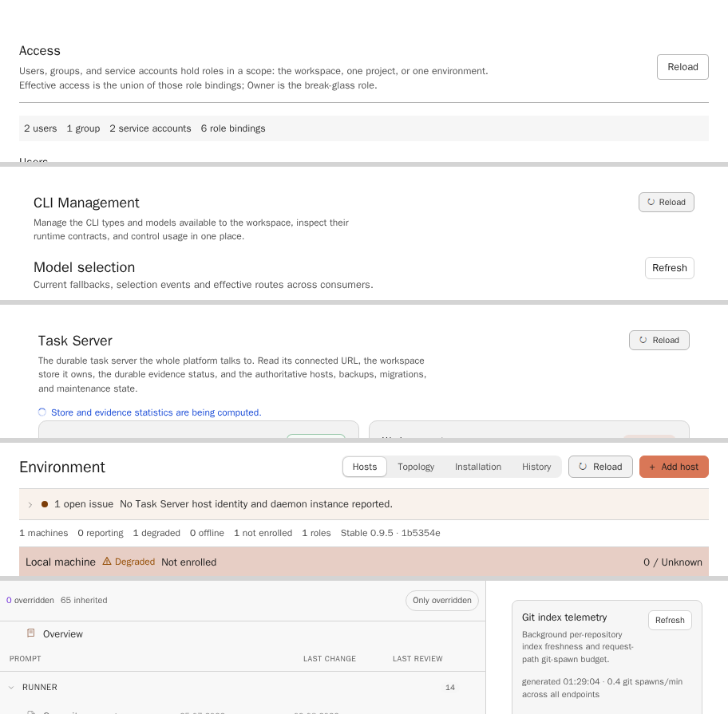
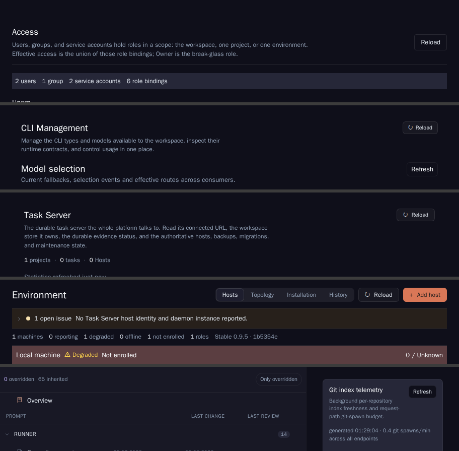

Studio look and feel: one component library, one standard, page by page
The Studio has 59 shared components, but most controls are still built again in each feature. The 1,325 buttons outside the shared folder carry 548 different first class names. Their styles use 20 corner radii and 26 font sizes. 107 tables are styled separately in 69 files, and the SCSS holds 139 different font sizes. This concept makes the shared components a library project of their own inside the frontend workspace, with a catalogue that shows every state in both themes. It adds a short UI standard with checkable rules, puts that standard into the design skill and the visual review, and reworks the pages one card at a time with an owner review between cards.
On 24 November 2026 the owner wrote that the Access page is very confusing. He wants it reworked visually and wants the lessons from that rework to improve the design skill and become standards that apply everywhere. After that, the look and feel of all pages is reworked step by step, with his review after each step. Controls and their look must be the same everywhere, built from standard components for grids, buttons, context menus, sections and layout. The component library is an area of its own that is developed independently.
Earlier preferences still hold. Colours and type stay in the existing Studio style, with no palette of a model's own. Headers stay calm and colour sits in the depth of the page. Rich technical detail is welcome when it is ordered. Long pages get an outline to navigate by. The product hosts its own fonts.
This is a concept. It changes no product code. Each number below comes from inventory/build-inventory.mjs, a read-only script over the tracked frontend files at develop 1b5354e53. Its output is inventory/inventory.json, which lists every file it counted. The screenshots come from capture/run.sh.
Open decisions LF-D1 to LF-D11; Slices LF-1 to LF-16 with dependsOn in workbench.json
The Access pilot
The Access page is reworked in parallel by the card "Access page: clear visual rework as the first step of the look and feel overhaul". Its pattern notes will be written to docs/system/ui-standard/access-page-pilot.md. This concept does not wait for the pilot. Its results feed in at three points:
Standard. Slice LF-2 reads the pilot notes when it writes docs/system/ui-standard/rules.md. Each pilot pattern becomes a rule, is merged into an existing rule, or is recorded as specific to Access, with the reason.
Library. Slices LF-4 to LF-6 (page, section, outline, toolbar, button, menu, grid) take the structures the pilot built locally as their first real consumer. The pilot's markup and SCSS are the reference for what these components must cover. Access is then the first page moved onto the library, inside LF-6, with no visual change against the owner-approved pilot.
Skill. Slice LF-8 adds the pilot's before and after pair to the design skill as the worked example for "screen in an existing product".
If the pilot has not landed when LF-2 starts, LF-2 writes the rules from this Dossier and leaves one open row for each pilot pattern. The pilot card or LF-4 fills those rows in later.
02 Inventory
The frontend has 547 templates, 570 SCSS files and 537 Angular components in 49 feature folders. The shared folder frontend/src/app/components/ holds 59 components and 5 directives. The counts below cover templates outside that folder, so they measure what features build for themselves. The heuristic for each family is written in HEURISTICS at the top of the script, and the per-file lists are in inventory.json under patterns and scssRules.
Shared components today
Usage is the number of templates outside the component's own folder that use its selector.
Surfaces and type move into library tokens. chip is retired.
Global classes in styles.scss and app.scss
.btn on 38 buttons in 16 templates, .studio-button on 19 buttons in 8 templates, .header-btn in 2 templates
Replaced by sui-button, then removed when their last user is gone
Feature-level shared parts also exist outside the shared folder: app-page-action-bar in features/project-detail (one user), app-studio-empty-state in features/studio-shell (one user), the Access mixins in features/access/_access-controls.scss (14 files) and the deploy mixins (9 files). Each is a local library that grew inside one feature because there was no shared place for it.
Patterns built again per feature
Family
Shared component and its users
Built per feature
How far they differ (SCSS values, non-hover rules)
Grids and tables
None. app-row and app-list-row are single rows (1 user each).
107 <table> or role="grid"/"table" elements in 71 templates
355 table rules in 69 files. 22 font sizes and 26 cell paddings. Each table has its own header style, density and empty row.
Buttons
appPendingButton 47, global .btn 16 templates
1,325 <button> elements in 345 templates. 548 distinct first class names, and 388 buttons have no class and are styled by element selectors.
452 button rules in 201 files. 20 corner radii (6px 77 times, 4px 36, 5px 22), 20 min-heights (28px, 34px, 26px, 24px, 30px are the most common), 26 font sizes, 45 paddings.
Menus and context menus
app-menu in 16 templates. All 7 templates with a (contextmenu) handler use it.
8 templates with their own menu, dropdown or popover element (for example filters-dropdown, previous-results-control, document-details-menu)
12 menu rules in 10 files. Four corner radii. This family has converged the furthest.
Dialogs and drawers
app-dialog 16 templates, app-sidesheet 3
26 templates declare role="dialog" or <dialog> without either, for example create-task-dialog, add-host-wizard, runner-setup-dialog, update-center, verbose-debug-overlay, log-overlay
68 rules in 31 files. Eight radii (8px, 10px, 18px, 6px, 12px and more) and 15 paddings.
Form controls
None for fields. app-segmented-control 32 and app-cli-model-selector 10 cover choices.
In 142 templates: 141 text, 49 number, 49 checkbox, 10 search, 8 password, 8 radio and 13 other inputs, 153 selects and 46 textareas. Native checkboxes appear in 31 templates.
344 rules in 139 files. 17 radii, 20 min-heights (36px, 34px, 32px, 30px, token), 20 font sizes, 30 paddings.
Chips and status
app-status-indicator in 249 templates (states, AGT-3402). app-count-badge 5. app-tag-chips 3.
174 own pill, chip, badge or tag elements in 85 templates. 29 files are pinned as tags or counts in status-chip-baseline.json.
399 rules in 109 files. 17 radii (999px, 7px, 3px, 4px, 5px), 24 font sizes, 38 paddings.
Toolbars
app-page-action-bar 1 user
126 templates with containers named *toolbar, *actions or *controls. Only 2 product templates set role="toolbar".
221 rules in 143 files. Spacing and grouping differ; keyboard behaviour is mostly absent.
107 templates with their own *empty* element and 128 with their own *error or *failed element
152 empty rules in 95 files with 19 font sizes and 36 paddings. Error states have no shared form.
Type and shape overall
Tokens --studio-font-size-sm…2xl and --studio-radius-* exist
Raw values in SCSS
139 distinct font-size values (11px 493 times, 12px 452, 10px 220, 0.78rem 183) and 55 distinct border-radius values. 11 font-family values and no woff2 file in the repository, although the admin guideline requires local Inter and JetBrains Mono.
Three families have already converged and show what works: state labels (app-status-indicator plus a lint gate), menus (app-menu plus the text-only rule) and disclosure markers (a component plus a gate with a baseline). In each case the shared component came with a guard that fails when someone builds the pattern again. The families without such a guard (buttons, tables, fields, headers, empty states) are the ones that diverge most.
03 Pages measured
For each page the script starts at its root components and walks every feature component its templates use. Shared components are counted as used, not walked. "Local vocabulary" is the sum of distinct button classes, own chips, own header elements and local SCSS rules for buttons, fields, tables, chips, headers, titles, menus, dialogs and empty states. It is a measure of how many locally made control styles a reader meets on the page. "Commits" counts commits since 26 August 2026 that touched the page's files, which shows where change and owner attention have gone. No page-view telemetry exists in the product. The use classes below are inferred from each page's role, and the owner confirms them in LF-D8.
Page
Use
Components
Template lines
Local vocabulary
Button classes
Font sizes
Tables
Fields
Commits
Task detail
daily
102
9,495
696
135
62
4
31
487
Board
daily
38
1,988
230
27
32
3
11
283
Dossier viewer
daily
11
1,092
76
13
21
0
12
73
Orchestrator side sheet
daily
10
735
52
8
16
0
1
19
Header and status bar
daily
17
863
44
9
20
1
4
197
Explorer sidebar
daily
8
560
11
5
3
0
2
29
Deck: deploy and environments
weekly
43
3,146
306
37
33
10
72
194
Deck: project settings
weekly
34
3,446
247
34
37
4
85
90
Deck: wiki
weekly
21
2,305
166
40
30
1
11
21
Deck: git and integration
weekly
7
692
106
17
12
1
1
6
Deck: token usage
weekly
13
877
95
11
21
7
3
17
Deck: overview
weekly
5
500
63
10
29
1
7
18
Settings: Environment (remote hosts)
occasional
28
1,877
143
18
9
0
34
90
Settings: CLI Management
occasional
10
821
94
5
18
4
26
24
Settings: System prompts
occasional
9
851
85
7
18
8
3
7
Settings: Access (pilot)
occasional
15
1,113
76
5
8
13
46
46
The other 19 measured pages (Operations, Team, Retention, Magazine, Deck quality, Task Server, Deck proposals, Structure, Deployment dashboard, Workspaces, Orchestrator settings, Usage detail, Deck security, First run, GitHub, Secrets, Updates, Credentials, Appearance) each have a local vocabulary between 3 and 44. They are in inventory.json under pages.
Access is not the most divergent page by vocabulary: its components share one local mixin file, so its 76 local styles are consistent with each other. It is confusing for a different reason. With the test fixture the page renders 9 tables, 23 fields and 27 buttons under 19 headings in one column (its templates hold 13 tables and 46 fields in all states), with no outline and no clear order between reading, granting and creating (see Evidence). That is why the library starts with page, section and outline components, not with buttons.
04 Library
The library holds the generic building blocks: layout, sections, controls, overlays and states. It is developed, tested, documented and reviewed without running the product suites. Studio domain components (task references, lane chips, model badges) stay in the app and are built from library parts.
Where it lives: three options
A · Library project inside the frontend workspace
frontend/projects/studio-ui/ is an Angular library project in angular.json, next to the existing twelve mockup applications. The app consumes its source through a TypeScript path alias @studio/ui, with no separate build or publish step. A library change and the page that needs it can land in one commit.
Versioning: none at the package level. The public surface is public-api.ts plus a generated API report checked in next to it, and a CHANGELOG.md gets one line per card. A breaking change shows up as an API report diff in review.
Cost: lowest. It uses the existing npm install, lockfile, e2e fingerprint, Stable release identity and CI.
B · Separate package in this repository
packages/studio-ui/ has its own package.json and is built with ng-packagr. The frontend consumes it through npm workspaces or a registry version.
Versioning: semver with a changelog, pinned by the frontend.
Cost: a build step before every frontend build and e2e prebuild, a second lockfile scope, and a change to scripts/e2e-source-fingerprint.sh. It also conflicts with the rule in frontend/AGENTS.md that forbids local file: and dist dependencies for Stable release identity. Every library change becomes two steps: release, then bump.
C · Repository of its own
The library is a published npm package in its own repository, consumed by exact version, the way coding-agent-chat is today.
Versioning: semver releases.
Cost: highest. coding-agent-chat has been pinned at 0.4.1 since 7 September 2026. Two post-install scripts (patch-coding-agent-chat-model-selector.mjs and patch-coding-agent-chat-technical-blocks.mjs) rewrite its published output because fixes have not been released upstream. Its change path in frontend/AGENTS.md is a local checkout on another machine. Agent cards in this runner cannot change library and page in one card.
Recommended: A. Independence comes from boundaries, not from a separate repository:
Import boundary. An ESLint no-restricted-imports rule fails when anything under frontend/projects/studio-ui/ imports from frontend/src/app/, coding-agent-chat or a Studio service. The library depends only on Angular, @angular/cdk and the token files.
Tokens. The library owns the component tokens (control heights, radii, type ramp, density) in projects/studio-ui/src/styles/. It reads the existing --studio-* colour tokens from _tokens-primitives.scss and _tokens-semantic.scss, which move into the library unchanged. No new palette is introduced.
Own checks.npm run ui:test (the library's unit tests), npm run ui:lint and npm run ui:catalogue:check (catalogue screenshots) run without the backend, without dotnet publish and without the product suites.
Own documentation. Each component folder has a README.md (purpose, inputs, states, keyboard, do and do not) that the catalogue renders.
Exit criterion. If a second product ever consumes the library, it moves to option B. The import boundary keeps that move mechanical.
Proposed layout. Arrows point from the library to its two consumers. The library never imports from the app.
Catalogue and documentation
The catalogue is an Angular application, studio-ui-catalogue, in the same workspace (option A of LF-D2), built the way the existing mockup apps are. Each component has a *.catalogue.ts file that lists its states as plain data: label, inputs, projected content, and the theme and width it needs. The catalogue renders every entry in both themes, with the component README beside it. A Playwright spec, projects/studio-ui-catalogue/e2e/catalogue.spec.ts, opens each entry against the static build (no backend) and compares it with checked-in screenshots at 1440 and 390 px. That comparison is the library's visual regression test. It is also the review material for the owner: a library card ships before and after catalogue images instead of product screenshots.
Storybook (option B) would bring a second build system and its own Angular builder. It brings several hundred megabytes of dependencies, and every Angular upgrade would wait for it. A static HTML catalogue in docs/ (option C) would show pictures, not the live components, and would go stale. The data format of option A also feeds the design skill: an agent can read *.catalogue.ts to see which states exist before it builds a page.
Ownership and change path
Owner. The owner approves the UI standard and every new component family. He reviews in the catalogue (images in the card result) and, for pages, in the product.
Library cards. A new family (grid, field, popover) is its own card with scope frontend/projects/studio-ui/**. It needs no product screenshots and does not change pages, apart from moving the pilot page or one named consumer onto the new family.
Page cards consume the library. A page card may add a variant or a small component when the page needs it, under the library contract: catalogue entry, README, unit spec, both themes and a changelog line, all in their own commit in the same card. A new family is never added inside a page card.
Selector prefix. New library components use the prefix sui-. Moved components keep their app- selector as an alias (selector: 'sui-menu, app-menu') until their last app- user is gone. The existing gates (check-status-chips.mjs, check-disclosure-markers.mjs, check-segmented-controls.mjs) keep working.
05 Standard components
The components are ordered by need. Layout and sections come first because the Access problem is structure, not control style. Each component reads only library tokens, works in both themes from those tokens, and drops all motion under prefers-reduced-motion: reduce (R5). "From" names what it replaces or absorbs.
1 · Layout and sections
Component
Covers
States
Keyboard and screen reader
Light and dark
sui-page
The page frame: one-line title row with an optional purpose sentence and an info disclosure, a page-actions slot, optional outline, body. Full-bleed (R2). Reading width applies only to prose blocks inside. From: the 181 local root grids, the settings panel heads.
Exactly one h1, or h2 when the page sits inside a settings shell, through an input. The landmark is main or region with the page title as name. Focus moves to the title on navigation.
Ground --studio-bg-editor. Calm header without a colour field; colour lives in content (owner preference).
sui-section
A titled block with a count, a hint, a section-actions slot, an optional toolbar and a body. Optionally collapsible through app-disclosure-marker. Registers itself with the outline. From: 359 own header elements, deck-panel, deck-section-head, app-section-header (sidebar variant).
expanded, collapsed, empty (body replaced by sui-empty-state), busy, attention (background tint, never a left bar, R1)
The heading level comes from nesting depth, not from local choice. aria-labelledby points to the heading. A collapsible section uses a button with aria-expanded (disclosure grammar AGT-2813).
Flat surface, one hairline separator, tint for attention from the status tokens.
sui-pane
A pane in a split view: header row (title, tabs, actions), the scroll owner, an optional footer. From: app-pane-header, the task-detail panes.
active, inactive, loading, empty, error
R8: owns ArrowUp/Down, PageUp/Down, Home and End while focus is inside its content; focus moves in when it opens.
Pane headers --studio-bg-sidebar, body editor ground.
sui-split
Two or three panes with resizable splitters and persisted sizes; collapses to stacked panes or tabs under 760 px. From: appResizableSplitter, local two-column grids.
The splitter is role="separator" with aria-valuenow. Arrow keys resize in 16 px steps, and Enter collapses or restores a pane.
Splitter hairline uses --studio-border-strong on hover and focus.
sui-toolbar
A row of controls for one surface: search, filters, view switches, one primary action at most. Groups with separators; overflow moves into a sui-menu. From: 126 local *actions/*controls rows, app-page-action-bar.
default, overflowing, disabled group, busy
role="toolbar" with roving tabindex (reuses directives/roving-focus). One Tab stop, arrows move inside, Home and End.
No own background; sits on the section surface.
sui-outline
The navigable outline of a long page, built from the registered sections, with counts and attention dots. It becomes a select under 760 px. Required on pages with more than three sections or more than two screens (rule U3).
current section, attention in section, collapsed (phone)
nav landmark named after the page. Links carry aria-current="location" for the section in view. Activating a link moves focus to that section's heading.
Active entry reuses --studio-nav-active-* (AGT-2010), the one sanctioned bar.
Layout mixins
stack, cluster and form-grid (label column plus field column, wraps on phone) as SCSS mixins with token gaps only.
n/a
DOM order equals visual order.
n/a
2 · Grid
Component
Covers
States
Keyboard and screen reader
Light and dark
sui-data-grid
Lists of comparable records with two or more attributes. Column definitions (label, cell template, alignment, numeric, width, sortable, hidden on phone), sticky header, density compact or default, row selection, a row actions menu, a footer aggregate that equals the sum of visible rows (R3). Under 760 px rows stack into label and value pairs, the way the Access tables already do with data-label. Built on native <table> (LF-D6). From: 107 local tables in 71 templates.
loading (skeleton rows after 200 ms, R6), empty (with next action), error (with retry), filtered to nothing, populated, row selected, row busy, row disabled with reason, sorted asc or desc
Native table semantics, scope="col", sort buttons in headers with aria-sort. In selection mode it becomes an interactive grid: role="grid", arrow navigation between cells, Space selects, and the ContextMenu key or Shift+F10 opens the row menu. A caption or aria-labelledby names the section.
Header text --studio-fg-dim, row hover --studio-bg-hover, selection --studio-bg-selected, numbers tabular.
Four variants: primary, secondary, quiet, danger. Two sizes: default (row height token) and compact. Optional leading icon. Absorbs appPendingButton (R6). From: .btn, .studio-button, 548 local classes.
default, hover, active, focus-visible, disabled, disabled with reason (tooltip), pending (spinner plus label, aria-busy)
Native button. Disabled-with-reason keeps focus and uses aria-disabled so the reason stays reachable. Focus ring from --studio-accent.
Primary on --studio-accent with --studio-on-accent text; contrast is checked in both themes by the catalogue spec.
sui-icon-button
Icon-only action with a required accessible name and tooltip. From: m.icon-button (5 files), .btn-icon, header buttons.
same as button, plus toggled (aria-pressed)
Required label input becomes aria-label and the tooltip text.
Icon --studio-fg-dim, hover --studio-fg.
sui-segmented
Pick one of N. Moved from app-segmented-control (32 users), unchanged.
as today
as today: role="group", aria-pressed
as today
sui-menu and [suiMenuTrigger]
Moved from app-menu (16 templates), text-only rows (menu rule in frontend/AGENTS.md), groups, disabled rows with reason, a danger row, submenus one level deep.
closed, open, row hover, row disabled, row danger, submenu open
role="menu" and menuitem. The trigger has aria-haspopup and aria-expanded. Arrow keys, Home, End, type-ahead. Escape closes and returns focus to the trigger.
Elevated surface tokens; no icons in rows.
[suiContextMenu]
Right-click menu on rows, cards and tree items, opening the same sui-menu. The same actions are reachable from a visible ⋯ row action, so the context menu is never the only path.
as menu
The ContextMenu key and Shift+F10 open it at the focused element. Today the 7 context-menu templates handle (contextmenu) with the mouse; the keyboard path is new.
as menu
4 · Form controls
Component
Covers
States
Keyboard and screen reader
Light and dark
sui-field
Label, hint, error text, required marker and a projected native control. It owns the spacing between them, so pages never style labels. From: 142 templates with fields.
default, focused, filled, invalid (message under the field), disabled, read-only, with unit suffix
Label for and id wiring, hint and error through aria-describedby, aria-invalid. A visible label is required (placeholder is not a label).
Border --studio-border-strong, focus accent, invalid from --studio-status-danger with text, not colour alone.
suiInput, suiSelect, suiTextarea (attributes on native controls)
One height, radius, padding and type size for text, number, search, password, url, date and time inputs, selects and textareas. Native elements stay native.
as field
Native semantics
Surface --studio-bg-surface
sui-checkbox, sui-radio-group, sui-switch
Styled native checkbox and radio, plus a switch for settings that apply immediately. From: native checkboxes in 31 templates, 8 radios.
off, on, mixed (checkbox), disabled, invalid
A radio group is a fieldset and legend; a switch is role="switch" with aria-checked.
Accent fill when on
sui-form-actions
Footer row of a form: one primary, secondary actions, the pending state, an error summary for long forms.
idle, dirty, pending, failed (summary with links to fields)
The error summary is role="alert" and links move focus to the invalid field.
n/a
5 · Overlays
Component
Covers
States
Keyboard and screen reader
Light and dark
sui-dialog and confirm service
Blocking decisions and short forms. Moved from app-dialog (sizes sm and md, kinds default, danger, primary) and confirm-dialog. Adds size lg for wizards. From: the 26 templates with their own role="dialog".
open, busy, error inside, danger confirmation with typed reason (the confirmTaskDelete pattern)
role="dialog" or alertdialog, aria-modal, focus trap (modal-focus directive), Escape closes unless busy, focus returns to the opener.
Parallel work beside the page. Moved from app-sidesheet, with the push contract in frontend/AGENTS.md (row-reverse parent, :host width animation, inner width 100 %).
closed, open, resizing
complementary landmark with a name; focus moves in when opened.
Sidebar ground
sui-popover
Anchored, non-modal detail such as token breakdowns, status detail or filter panels. Built on @angular/cdk/overlay. From: the 8 local popover and dropdown elements.
closed, open, pinned
Opened by a button with aria-expanded; Escape closes; focus goes in only when the content is interactive.
Elevated surface
suiTooltip, sui-toast
Moved from appTooltip and app-notification unchanged.
as today
as today
as today
6 · Status, chips and states
Component
Covers
States
Keyboard and screen reader
Light and dark
sui-status
Moved from app-status-indicator (six tones, AGT-3402) with its gate.
Labels that are not states: role names, scopes, kinds, sources. Neutral by default with one emphasis tone. It replaces the tags and counts pinned in status-chip-baseline.json (29 files) and the 174 local chip elements.
A removable tag has a remove button named "Remove <label>".
Surface tint, never a status colour
sui-count
Moved from app-count-badge. Counts equal their visible children (R3).
zero, some, overflow (99+)
The accessible name includes the noun ("3 users").
Muted
sui-empty-state
Moved from app-empty-state. Always names why the area is empty and the next action.
nothing yet, filtered to nothing, not configured, no permission
Text in flow, the action is a button
Muted text, no illustration
sui-error-state
New. One sentence of what failed, the next action, and technical detail behind a disclosure (the refusal pattern of AGT-3624). From: 128 templates with their own error element.
recoverable (retry), blocked (next step elsewhere), partial (some data shown)
role="alert" only when it appears after an action; otherwise plain text
Danger tint background (R1, no bar)
sui-loading-surface
Moved from app-loading-surface (R6 timing: hidden for 200 ms, skeleton, copy after one second).
as today
aria-busy on the owning region
as today
06 UI standard
The standard is a short list of rules in docs/system/ui-standard/rules.md, next to the pilot notes. Each rule has an id, one sentence, a one-line reason and the check that enforces it. Component detail (states, keyboard behaviour, inputs) lives in the component README and the catalogue, never in the rules file.
Rule
Text
Check
U1
A page is a sui-page made of sui-sections, or a sui-split of sui-panes. No local page header or root grid.
Headings come from page and section nesting. A template in an enforced page writes no h1 to h6 of its own.
Guard
U3
A page with more than three sections or more than two screens of content has a sui-outline.
Review aspect; catalogue states
U4
Every button is sui-button or sui-icon-button in one of four variants. A toolbar or section has at most one primary.
Guard (no other class on <button>); Stylelint (no button element selector in feature SCSS)
U5
Comparable records with two or more attributes are a sui-data-grid. A list with one attribute is a sui-list.
Guard (no <table> outside the library)
U6
Row, card and tree actions are a sui-menu behind a visible ⋯ trigger. A context menu repeats that menu and opens from the keyboard.
Guard (a (contextmenu) handler without suiContextMenu fails); review
U7
Every field is a sui-field with a visible label; errors stand under the field in words.
Guard (no bare input, select or textarea outside sui-field); Stylelint
U8
Blocking decisions use sui-dialog, parallel work uses sui-side-sheet, anchored detail uses sui-popover. No local role="dialog".
Guard
U9
A state is a sui-status, a label is a sui-tag, a number is a sui-count.
Existing gate check-status-chips.mjs, extended to tags
U10
Every list, grid and section has an empty, loading and error state from the library, and each names a next action.
Catalogue states; review aspect
U11
Feature SCSS sets no font-size, border-radius, control height or font-family; these come from library components and tokens. Feature SCSS lays out content; it does not style controls.
Stylelint override per enforced page folder (the pattern already used for features/remote-hosts/**)
U12
When the library has no fitting component, the card adds one under the library contract (catalogue entry, README, spec, both themes, changelog) or records a local exception with a reason in the enforced list. It does not build the control locally without a record.
Guard baseline entry needs reason; review
Relation to the existing style guide
style-guide-hard-rules.md stays the short non-negotiable baseline (R1 to R9). It gains one rule, R10: "Reworked pages follow the UI standard in docs/system/ui-standard/rules.md." The U-rules do not repeat R1 to R9; the components implement them.
The Admin design guideline stays the visual reference for admin surfaces. Its component-level contracts (one grid for comparable entries, one-line headers, disclosure grammar, panel key containment) become component behaviour in the library, and the guideline links to the components.
The family pages in docs/quality/frontend/style-guide/ (buttons.md, forms.md, pills.md, modals.md, cards.md, tabs.md and their audits) answer the open questions they raise ("do we need <app-button>?", "do we need form controls?"). Each gets a "Superseded by" line pointing at the library component once its family ships. migration-status.md is replaced by the rollout ledger docs/system/ui-standard/rollout.md.
When the rule packs of Style rules in the card (SR-S1) land, rules.md becomes the ui-standard pack in that format, with the same rule ids. Until then it reaches cards through frontend/AGENTS.md, docs/quality/frontend-styling.md and the design skill.
How a rule is enforced
The repository already has a working pattern: a shared component, a structure gate in npm run lint:structure, and a baseline file whose entries need a written reason. Examples are status-chip-baseline.json (29 documented files), disclosure-baseline.json (28 enforced files, 22 staged adoptions) and segmented-baseline.json. The standard reuses that pattern:
Guard.frontend/scripts/check-ui-standard.mjs reads ui-standard-baseline.json, which has an enforced list of page folders. In an enforced folder it fails on rules U1, U2, U4 to U8 and U12. A page card moves its folders into enforced, so each reworked page is locked against regression from the day it ships, while pages that are not yet reworked are left alone.
Lint. A Stylelint override for the enforced folders sets declaration-property-value-allowed-list for font-size, border-radius, height and min-height (library tokens only) and a selector-disallowed-list for button, input, select, textarea and table element selectors (U11).
Review aspect. The visual review cites rule ids for what a script cannot see: U3 (outline), U10 (states and next actions), and whether a page reads as one product.
Design skill. The skill makes the agent look in the catalogue first and name the components it used and added.
07 Design skill and review
The design skill
.agents/skills/visual-design/SKILL.md is loaded for cards whose acceptance is visual. The parallel card AGT-4023 (delivered, not yet integrated at 1b5354e53) adds "Studio views use Studio tokens" and "Content first for technical views" to it. Slice LF-8 builds on that change and adds:
A new reference, references/studio-ui.md, for "Screen in an existing product". It says: read docs/system/ui-standard/rules.md, open the catalogue entries for the families the screen needs, list the components you will use, and decide for each missing need whether it is a variant, a new library component (U12) or a recorded exception.
A change to hard rule 1, "Respect the existing structure": on a rollout page card the target structure is the standard, not the old page.
A rubric check, "Standard fit": every control from the library; structure through page, section and outline; states present; no local control styles. A score below 4 blocks delivery like the other dimensions.
A delivery table, "Patterns used and added", that every UI card writes into its result: library components used, components or variants added, exceptions with reasons.
The Access pilot's before and after pair as the worked example.
Every card that touches UI gets the standard even when the skill is not loaded. frontend/AGENTS.md names the rules file and the catalogue in its first section, and the prompt-enrichment context docs/quality/frontend-styling.md, which Preparation appends for frontend cards, links to it. The guard catches what an agent misses on enforced pages.
The visual review aspect
runner/VisualReviewScreenshotBundle.cs already appends style-guide-hard-rules.md to the visual review prompt (line 248). Slice LF-9 changes three things:
It appends docs/system/ui-standard/rules.md in the same way, and adds a "Standard fit" paragraph to prompts/runtime/review-aspect-visual-review.md: cite rule ids (U1 to U12) for each concern, and treat a missing outline, missing state or local control on a reworked page as concerns.
For a page card the aspect requires the before and after set (1440 and 390 px, light and dark), checks the "Patterns used and added" table against the diff, and names a guard baseline that grew as a concern.
For a library-only change (only frontend/projects/studio-ui/**) the aspect takes the catalogue before and after images as its screenshots, so no product screenshots are demanded.
08 Rollout
Each page is a card of its own. The owner reviews it in the product and in the screenshots before the next page card starts; the slices chain each page card to the previous one with dependsOn, so the scheduler enforces the order. The library families come first because they are cheap to check and the owner can review them in the catalogue while the pilot runs.
Order of pages
Pages are ordered by use first (daily, weekly, occasional) and by local vocabulary within a class. Task detail is the largest page, with 102 components, so it is split into three cards along its existing panes. The order is recorded in docs/system/ui-standard/rollout.md and the owner can change it there.
#
Page card
Use
Local vocabulary
Why here
0
Settings: Access (pilot, parallel card)
occasional
76
Owner direction; moved onto the library in LF-6
1
Board (LF-15)
daily
230
Daily, 27 button classes, 32 font sizes, the most-used context menu
2
Task detail: header and overview (LF-16)
daily
696
The most divergent page; split along panes so each review stays readable
3
Task detail: result, timeline and protocol
daily
4
Task detail: files, git and source panes
daily
5
Dossier viewer
daily
76
The owner's decision surface
6
Header, status bar and orchestrator side sheet
daily
96
Shell chrome; small but seen on every page
7
Deck: deploy and environments
weekly
306
Highest vocabulary in the Deck, 72 fields
8
Deck: project settings
weekly
247
85 fields; the form family proves itself here
9
Deck: wiki
weekly
166
40 button classes
10
Deck: git and integration, token usage, overview
weekly
264
One card per page, in that order
11
Settings: Environment
occasional
143
Five local dialogs, 34 fields
12
Settings: CLI Management, System prompts
occasional
179
Table and form heavy; one card each
13
Remaining Deck and settings pages
weekly or occasional
3 to 44 each
By vocabulary. The five smallest settings pages (Updates, Appearance, Credentials, Secrets, GitHub, 3 to 11 each) share one card (LF-D9).
What a page card delivers
Before and after screenshots at 1440 and 390 px, light and dark, named <page>/before-1440-light.png and <page>/after-1440-light.png as docs/system/domains/review.md requires. The set covers populated, empty and error states where the page can reach them with a fixture.
Patterns used and added: a table of library components used, components or variants added (each with its catalogue entry), and exceptions with reasons.
Guard. The page folders move into enforced in ui-standard-baseline.json and the Stylelint override.
Local CSS removed: lines of feature SCSS before and after, from the inventory script re-run on the branch.
Tests: the page's existing Playwright specs pass unchanged in behaviour (selectors are data-testid, which the rework keeps). The page's unit specs are updated where the markup changed.
Rollout ledger: one row in docs/system/ui-standard/rollout.md with the card key, date, screenshots and the owner review result once given.
Pages that are not yet reworked
Colour tokens do not change. The library reads the same --studio-* tokens, so pages that are not reworked keep their look.
Moved components keep their app- selector as an alias and their current appearance. LF-3 is a move with no visual change; the catalogue images taken at the move are the baseline.
Library styles are component-scoped. There is no global reset and no change to styles.scss element styles until the last page that relies on them is reworked. .btn and .studio-button stay until their last user is gone; the ledger shows the remaining count from the inventory script.
The guard and Stylelint override apply only to enforced folders.
A library change that alters a moved component's look is a library card with catalogue before and after images, and lists every page that uses the component.
The one global visible change is the self-hosted font (LF-10, LF-D7). It is its own card, reviewed by the owner on six surfaces before any page card.
Slice order as written in workbench.json. No two slices that change the same area are open at the same time.
09 Cost of checks
A page change today runs the prebuilt e2e path, which publishes the backend with dotnet publish and builds the whole frontend before the first spec. On the shared runner during this card that preparation took about 19 minutes before the first Access spec ran (measured from /tmp/agt4030-prebuild.log, the same machine running other builds). A library change needs none of that. The parallel card "Reviews and gates test what a change touches" works on choosing checks by changed paths. This concept gives it the map for the UI areas, written by LF-14 as frontend/projects/studio-ui/check-scope.json:
Change
Needs
Does not need
Library only, public API unchanged
ui:lint, ui:test, ui:catalogue:check (static build plus Playwright, no backend), API report unchanged, visual review on catalogue images
Backend build and tests, dotnet publish, product unit suite, product e2e, product screenshots
Library, public API changed
The above, plus npm run typecheck for the app and the unit specs of the components that import the changed symbol (from the import graph)
Backend, product e2e
Library, a moved component's look changed
The above, plus one screenshot spec per consuming page named in the catalogue entry
Backend tests, full e2e
One page card
The page's unit specs, the e2e specs mapped to the page's files (frontend/scripts/generate-e2e-coverage-map.mjs already builds that map), lint:structure and Stylelint for the page folders, visual review with before and after screenshots
Library tests (unless the card added to the library, then the library row applies to that commit), other pages' e2e, backend tests when no backend file changed
Standard docs only (docs/system/ui-standard/**)
Link and navigation check
Any build or test (AGENTS.md: documentation-only changes need no builds)
Design skill only
AgentSkillFrontmatterTests (the skill folder's only check)
Frontend and backend suites
Until that card lands, LF-14 provides npm run ui:affected -- <changed files>, which prints the rows above for a diff, so a card or reviewer can run exactly those checks by hand.
10 Alternatives
Three overall approaches were weighed. The per-question options are under Open decisions.
A · Library, standard, page by page (recommended)
A library project with a catalogue, a twelve-rule standard enforced per reworked page, then one page card at a time with owner review. Visible progress comes early (pilot, catalogue), regressions are locked per page, and pages that are not yet reworked are untouched. The price is a long tail: about 20 page cards before the last page is done.
B · Global restyle
Change the global element styles and the existing shared components so every page changes at once. This is fast to show, but it breaks the owner's "step by step with my review" and the incremental rule of AGENTS.md and R7. It cannot fix structure (outline, sections), because structure is in each page's markup, and it would produce one review the size of the whole product.
C · Standard and guards only, no library
Write the rules and extend the existing mixins; pages keep building their own controls to the rules. This is the path of migration-status.md since mid-2026: the chip mixin it names as canonical now has 0 users, and the open questions on buttons, cards and forms are still open. Rules without components do not converge.
11 Recommendation
Recommended default
Approach A. Create frontend/projects/studio-ui as an Angular library in the frontend workspace with an import boundary, its own tests and a studio-ui-catalogue app that shows every state in both themes (LF-D1 A, LF-D2 A). Move the 27 generic shared components into it without visual change, keeping their app- selectors as aliases (LF-D3 A, LF-D10 A). Build the families in order of need: layout and sections, buttons and menus, grid (with Access moved onto them), self-hosted font, forms, overlays, states (LF-D6 A, LF-D7 A). Write the twelve U-rules in docs/system/ui-standard/rules.md and add R10 to the hard rules (LF-D4 A). Enforce per reworked page with a guard and a Stylelint override (LF-D5 A). Feed the standard into the design skill and the visual review aspect. Then rework one page per card in the order daily, weekly, occasional, with owner review between cards (LF-D8 A, LF-D9 A, LF-D11 A).
The most important reason: the three families that already converged (status, menus, disclosure) did so because a component came with a guard. This plan gives every family both, plus a catalogue the owner can review without opening the product.
Evidence. In both themes the Access page is one column, about 2,600 px tall at 1440 px width. It has 19 headings, 9 tables, 13 selects, 10 inputs and 27 buttons. Four create forms sit between the tables (invite, add a role binding, create group, new service account), plus runner enrollment. There is no outline, and an orphan "Sessions" button stands under the users table. The figure is cut at 1,100 px; open an image for the full length.Light: captured by capture/look-and-feel-capture.spec.ts on the isolated prebuilt stack (develop 1b5354e53, profile standard). Access API answered with the fixture of frontend/e2e/settings/access-area.spec.ts. Element counts from capture/output/access-facts.json.Dark: captured , same run, same fixture, theme switched through data-studio-theme.
Light

One action, four buttons
Dark

Evidence. Five settings pages in the same shell, from the top: Access, CLI Management, Task Server, Environment, System prompts. The reload action looks different on each of the first four: plain text on Access, a small button with an icon on CLI Management (with a second, differently drawn "Refresh" button under it) and on Task Server, and a taller icon button next to a filled primary on Environment. The page titles start at three different left edges, and System prompts has no title at all.Light: captured by capture/look-and-feel-capture.spec.ts on the isolated prebuilt stack (develop 1b5354e53). Access uses the access-area fixture; the other four show what the isolated backend returned. Each strip is the region x 528 to 1440, y 133 to 300 of a 1440 × 900 capture, stacked without scaling under a 36 px margin for the theme label.Dark: captured , same run and regions.
Observations behind the figures
Font. The Access headings declare Inter, -apple-system, BlinkMacSystemFont, "Segoe UI", system-ui, sans-serif, but no Inter file ships with the product. On the capture host Chromium rendered them in WenQuanYi Zen Hei, a CJK system font (CSS.getPlatformFontsForNode, recorded in capture/output/access-facts.json). Every agent screenshot, and so every visual review, sees a different typeface from the owner. This backs LF-D7.
Undeclared token.var(--studio-radius-sm) is used 50 times in 27 SCSS files, but --studio-radius-sm is declared nowhere in the repository or in the coding-agent-chat package, so those corners resolve to no radius. LF-3 adds a guard that every var(--studio-*) used is declared.
Capture health. No page errors during capture. The console errors are 404 responses: on Access they are the fixture's intended 404 answers for operator agents and standing grants; on the other pages there is one 404 resource each (capture/output/capture-report.json).
13 Open decisions
Each decision has a recommended option. A promoted slice uses the recommendation unless the owner records another option.
LF-D1 · Where the library lives
Where does the component library live and how is it consumed?
A. Angular library project frontend/projects/studio-ui in the frontend workspace, consumed through a path alias
B. Separate npm package in this repository (packages/studio-ui), built and versioned
C. Repository of its own, published and pinned like coding-agent-chat
Recommended: A. Lowest cost and one-commit changes across library and page; independence comes from an import boundary, own checks and own docs. coding-agent-chat shows the price of C: pinned at 0.4.1 since 7 September 2026 with two post-install patch scripts. Move to B only if a second product consumes the library.
LF-D2 · Living catalogue
How is the catalogue of components with their states built?
A. Own Angular catalogue app in the workspace, states as data in *.catalogue.ts, Playwright screenshots without backend
B. Storybook
C. Static HTML pages under docs/
Recommended: A. Uses the existing mockup-app pattern and tooling, renders the live components, doubles as visual regression and owner review material, and its data files are readable by agents.
LF-D3 · Selector prefix
What prefix do library components use?
A. New prefix sui- with the old app- selector kept as an alias on moved components until the last app- user is gone
B. Keep app- for everything
Recommended: A. Makes library use visible in templates and in guards, while the alias keeps every existing page and lint gate working without churn.
LF-D4 · Where the UI standard lives
Where are the UI standard rules written?
A. docs/system/ui-standard/rules.md (U1 to U12) beside the pilot notes, with one pointer rule R10 in style-guide-hard-rules.md
B. Inside style-guide-hard-rules.md
C. In docs/quality/frontend/style-guide/
Recommended: A. Keeps the hard rules short, gives the standard one file that skill, prompt and review read, and supersedes the family pages instead of adding a sixth parallel source.
LF-D5 · How rules are enforced
How is the standard enforced?
A. Per reworked page: guard check-ui-standard.mjs with an enforced list, a Stylelint override for enforced folders, the visual review aspect citing rule ids, and the design skill
B. Review aspect and design skill only
C. Global lint for the whole frontend at once
Recommended: A. The families that converged (status, menus, disclosure) each had a component plus a guard with a baseline. A per-page enforced list locks each reworked page without breaking pages not yet reworked; C would fail hundreds of files on day one.
LF-D6 · Grid implementation
What is the data grid built on?
A. Own sui-data-grid on native table semantics, CDK only for focus and overlay helpers
B. CDK table as the base
C. Third-party data grid
Recommended: A. The Studio's lists are tens to hundreds of rows; native table semantics give screen reader support for free, the responsive stacked form already exists on Access, and no new dependency or theme bridge is needed.
LF-D7 · Product-hosted fonts
Which font does the library ship?
A. Self-host Inter and JetBrains Mono (woff2 with licences, font-display swap) as the admin guideline requires, applied globally in one owner-reviewed card
B. Keep the system stack (Segoe UI, system-ui)
C. Switch the font page by page
Recommended: A. The owner wants product-hosted fonts and the admin guideline already names Inter and JetBrains Mono, yet no woff2 ships; the capture host renders the Studio in a CJK fallback, so agent screenshots and reviews see another typeface than the owner. Segoe UI cannot be redistributed. C would mix fonts across pages for months.
LF-D8 · Order of pages
In which order are pages reworked?
A. By use (daily, weekly, occasional) and then by local vocabulary: Board, task detail in three cards, Dossier viewer, shell chrome, Deck pages, settings pages
B. Settings family first (closest to the Access pilot, lowest risk), then Deck, then daily surfaces
C. By local vocabulary only
Recommended: A. The owner gains most where he spends his day; the library is proven on Access and in the catalogue before the Board. The use classes are inferred from page roles because no page-view telemetry exists; the owner confirms or edits them in rollout.md.
LF-D9 · Size of a page card
How large is one page card?
A. One page per card; task detail split into three cards along its panes; the five smallest settings pages (Updates, Appearance, Credentials, Secrets, GitHub) in one card
B. Strictly one page per card, including the smallest
C. Several pages per card
Recommended: A. Keeps each owner review to one readable set of before and after screenshots; the five smallest pages have a local vocabulary of 3 to 11 and would make five near-empty reviews.
LF-D10 · Existing shared components
What happens to the 59 shared components in src/app/components?
A. Move the 27 generic primitives into the library unchanged, with app- aliases; domain components stay in the app
B. Wrap them with new library components
C. Leave them and build new library components beside them
Recommended: A. A move with no visual change gives the library its first 27 components at once, keeps all gates working, and avoids two competing versions of menu, dialog or status.
LF-D11 · Ownership and change path
Who changes the library and how?
A. Owner approves the standard and each new family in the catalogue; library cards own the library; page cards may add variants and small components under the library contract
B. Every library change is its own card
C. Page cards change the library freely
Recommended: A. New families get their own review; small additions a page really needs land with the page under the same contract, so a page card is not blocked by a separate card for one variant.
14 Slices
The slices are listed in delivery order, as in workbench.jsonimplementationTasks. "Area" is what the slice changes. Slices in the same area are chained by dependsOn, so they never run at the same time.
Slice
Depends on
Area
Acceptance
LF-1 · Library project, boundary and catalogue skeleton
none
frontend/angular.json, frontend/package.json (scripts only), frontend/tsconfig*.json (path alias), frontend/eslint.config.js, new frontend/projects/studio-ui/**, new frontend/projects/studio-ui-catalogue/**
npm run ui:test, npm run ui:lint and npm run ui:catalogue:check pass without the backend and without dotnet publish. An import from src/app inside the library fails npm run lint with the boundary rule. The app builds with the alias and npm run lint and npm test stay green; no product page changes.
LF-2 · UI standard documents and pointers
none
new docs/system/ui-standard/README.md, rules.md, rollout.md; docs/quality/design/style-guide-hard-rules.md (R10); frontend/AGENTS.md (first section); docs/quality/frontend-styling.md; docs/quality/frontend/style-guide/README.md and migration-status.md; docs/start/README.md
rules.md has twelve rules, each with id, sentence, reason and check, and no component detail. Every new document is listed in docs/start/README.md and every link resolves. No product code changes.
LF-3 · Move the generic shared components into the library
LF-1
frontend/src/app/components/** (27 generic primitives), frontend/src/styles/_tokens-primitives.scss, _tokens-semantic.scss (moved), all importing files in frontend/src/app/**, frontend/scripts/check-status-chips.mjs, check-disclosure-markers.mjs, check-segmented-controls.mjs and their baselines (paths only), frontend/projects/studio-ui/**
git diff shows no change to any moved template or SCSS file other than its path and selector alias. npm run lint, npm test, npm run ui:test and npm run ui:catalogue:check pass; the token guard passes. A Playwright run of the settings, board and task-detail smoke specs shows no visual change other than the declared radius, which is screenshotted before and after.
LF-4 · Layout and section components
LF-2, LF-3
frontend/projects/studio-ui/** only
Every state in the Dossier table is a catalogue entry in light and dark at 1440 and 390 px. Keyboard specs cover outline navigation, toolbar roving focus, splitter resize and pane key containment. Only library checks run; no product file changes.
LF-5 · Buttons and menus
LF-4
frontend/projects/studio-ui/** only
Contrast of every button variant and state passes in both themes in the catalogue spec. The context menu opens by mouse, ContextMenu key and Shift+F10 and returns focus to its trigger on Escape. Only library checks run; no product file changes.
LF-6 · Data grid, and Access moved onto the library
Every grid state is a catalogue entry; keyboard specs cover sort, selection and row menu. frontend/e2e/settings/access-area.spec.ts and the other Access specs pass unchanged. Access before and after screenshots differ only where the pilot's local controls were replaced, and the result names each difference.
The guard's tests cover each rule with a passing and a failing fixture. npm run lint passes on develop with only the enforced folders checked. A baseline entry without a reason fails the guard.
LF-8 · Design skill takes in the UI standard
LF-2
.agents/skills/visual-design/SKILL.md, .agents/skills/visual-design/references/rubric.md, new .agents/skills/visual-design/references/studio-ui.md
The skill names the rules file and the catalogue and requires the patterns table. AgentSkillFrontmatterTests pass.
LF-9 · Visual review aspect checks against the standard
Runner tests prove the rules file is appended when present and skipped when absent. A library-only fixture delivery with catalogue images does not get a missing-screenshot concern. The prompt is a CLI behaviour change: run the matching live probe or state why it could not run.
LF-10 · Self-hosted Inter and JetBrains Mono
LF-6
frontend/projects/studio-ui/src/styles/**, frontend/projects/studio-ui/assets/fonts/**, frontend/angular.json (assets), frontend/src/styles.scss (font tokens only), the 11 local font-family declarations
The rendered font on the capture host is Inter for text and JetBrains Mono for code. No network font request in the Playwright run (assert no request leaves the origin for fonts). Six surfaces have before and after screenshots in both themes.
LF-11 · Form controls
LF-10
frontend/projects/studio-ui/** only
Every state in the table is in the catalogue in both themes. Only library checks run.
LF-12 · Overlays
LF-11
frontend/projects/studio-ui/** only
Escape, focus trap and focus return are covered by specs for dialog and popover. Only library checks run.
LF-13 · Status, tags, counts, empty and error states
Every state in the table is in the catalogue in both themes. The status-chip gate tests cover the tag rule.
LF-14 · Change-scoped checks for library and pages
LF-7
new frontend/projects/studio-ui/check-scope.json, new frontend/scripts/ui-affected.mjs and its test, frontend/package.json (one script)
Tests cover each row with a fixture diff. A library-only diff lists no backend or product e2e check.
LF-15 · Page card: Board
LF-7, LF-8, LF-9, LF-13
frontend/src/app/features/board/**, the board parts of frontend/src/app/app.html, ui-standard-baseline.json, the Stylelint override, docs/system/ui-standard/rollout.md
Before and after screenshots in both themes and widths, the patterns table, and the guard enforcing the board folders. Board Playwright specs pass unchanged in behaviour. No guard baseline entry was added without a reason.
LF-16 · Page card: Task detail, header and overview
LF-15
frontend/src/app/features/task-detail/components/detail-header/**, .../prompt-pane/overview-pane/**, ui-standard-baseline.json, the Stylelint override, docs/system/ui-standard/rollout.md
Before and after screenshots, patterns table, enforced folders. e2e/task-detail/detail-lane-dropdown.spec.ts, detail-view-lane-pager.spec.ts and the overview specs pass.
15 Implementation
Delivery slices append their current implementation status here. Decision content above remains unchanged.